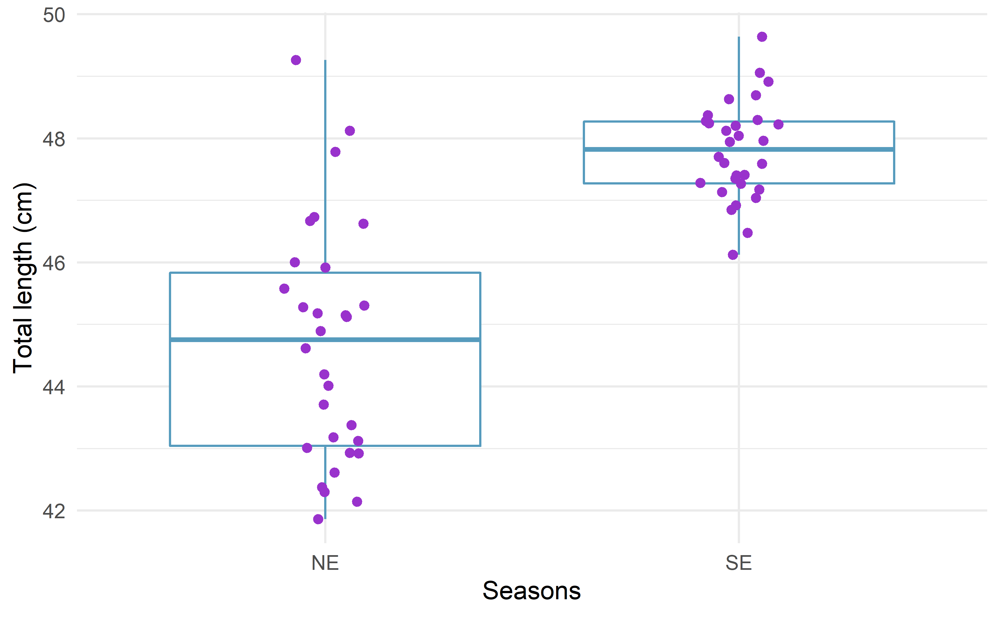
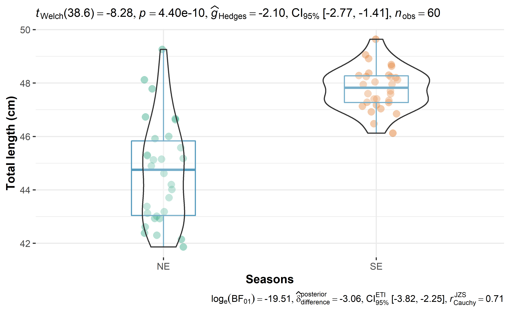

14 Two Independent Samples-parametric
In this section, we learn how to compare two groups when the normality assumption is met, using the ttest.
One of the most important test within the branch of inferential statistics is the Student’s t-test.1 The Student’s t-test for two samples is used to test whether two groups (two populations) are different in terms of a quantitative variable, based on the comparison of two samples drawn from these two groups. In other words, a Student’s t-test for two samples allows to determine whether the two populations from which your two samples are drawn are different (with the two samples being measured on a quantitative continuous variable).
To compare two samples, it is usual to compare a measure of central tendency computed for each sample. In the case of the Student’s t-test, the mean is used to compare the two samples. However, in some cases, the mean is not appropriate to compare two samples so the median is used to compare them via the Wilcoxon test. The Student’s t-test and Wilcoxon test have the same final goal, that is, compare two samples in and determine whether the two populations from which they were drawn are the same or different.
Although the Student’s t-test is more powerful than the Wilcoxon test but is sensitive to outliers and data asymmetry.
This chapter aim to show how to compute the Student’s t-test in R, so we refrain from testing the assumptions and we assume all of them are met for this exercise.
14.1 Null and alternative hypothesis
Before we dive into the computations of the Student’s t-test by hand, let’s explore the null and alternative hypotheses of this test. Although Student’s t-test is based on the comparison of the means of the two samples, the final goal of this test is actually to test the following hypotheses:
- \(H_O\): the two populations are similar
- \(H_A\): the two populations are different
This is in the general case where we simply want to determine whether the two populations are different or not (in terms of the dependent variable). In this sense, we have no prior belief about a particular population mean being larger or smaller than the other. This type of test is referred as a two-sided or bilateral test.
If we have some prior beliefs about one population mean being larger or smaller than the other, the Student’s t-test also allows to test the following hypotheses:
We may test whether the mean of the first population is significantly larger than the mean of the second, or the mean of the first population is significantly smaller than the mean of the second. This type of test is referred as a one-sided or unilateral test.
14.2 How to compute Student’s t-test in R?
A good practice before doing t-tests in R is to visualize the data first and explore the existing pattern. We often use a boxplot or a density plot or both to visualize the mean of the two independent groups.

Figure fig-boxplot indicates that the median total length of bigeye tuna is slighter higher during the SE compared to NE monsoon season. But boxplot just help the eye to compare the patterns of the mean for the two sample, if we want to
#>
#> Welch Two Sample t-test
#>
#> data: tl by season
#> t = -8, df = 39, p-value = 4e-10
#> alternative hypothesis: true difference in means between group NE and group SE is not equal to 0
#> 95 percent confidence interval:
#> -3.90 -2.37
#> sample estimates:
#> mean in group NE mean in group SE
#> 44.7 47.8#>
#> Welch Two Sample t-test
#>
#> data: tl by season
#> t = -8, df = 39, p-value = 4e-10
#> alternative hypothesis: true difference in means between group NE and group SE is not equal to 0
#> 95 percent confidence interval:
#> -3.90 -2.37
#> sample estimates:
#> mean in group NE mean in group SE
#> 44.7 47.8#>
#> Welch Two Sample t-test
#>
#> data: tl by season
#> t = -8, df = 39, p-value = 2e-10
#> alternative hypothesis: true difference in means between group NE and group SE is less than 0
#> 95 percent confidence interval:
#> -Inf -2.49
#> sample estimates:
#> mean in group NE mean in group SE
#> 44.7 47.8#>
#> Welch Two Sample t-test
#>
#> data: tl by season
#> t = -8, df = 39, p-value = 1
#> alternative hypothesis: true difference in means between group NE and group SE is greater than 0
#> 95 percent confidence interval:
#> -3.77 Inf
#> sample estimates:
#> mean in group NE mean in group SE
#> 44.7 47.8Figure fig-two-sample indicates the median total length of bigeye tuna during the two distinctive monsoon season along with the statistical rich information that help us to draw conclusion that the total length during the SE monsoon season is statistically significant (p < 0.05)
